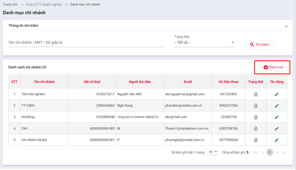
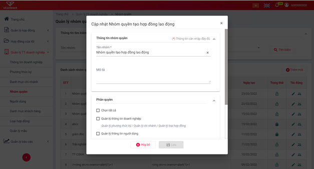
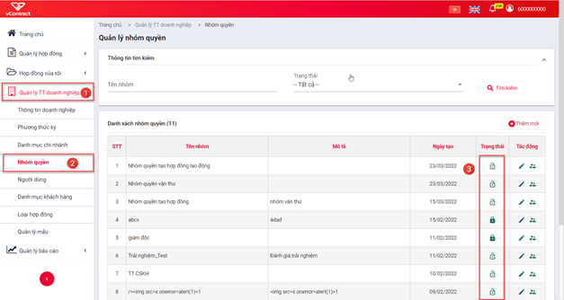
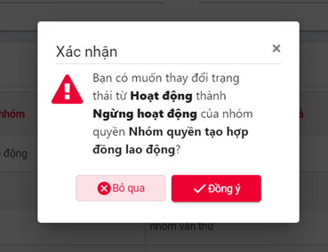
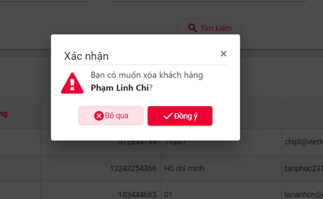
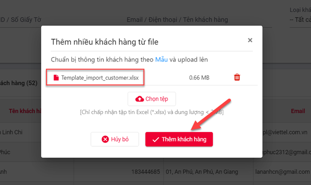
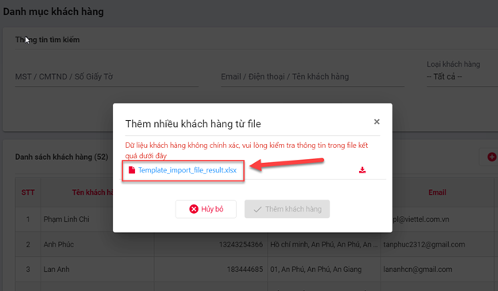

Hướng dẫn chức năng cho doanh nghiệp
Dashboard1
- Đăng nhập vào tài khoản doanh nghiệp >> Hiển thị màn hình Trang chủ.

Thống kê tài nguyên của doanh nghiệp
- Thống kê tài nguyên của doanh nghiệp: Số lượng hợp đồng chưa sử dụng, tài khoản SMS còn lại. Nếu số lượng hợp đồng và số tiền sử dụng gửi tin nhắn SMS của doanh nghiệp sắp hết hoặc hết thì hệ thống sẽ hiển thị cảnh báo cho doanh nghiệp trên màn hình dashboard.
Hợp đồng theo doanh nghiệp
- Thống kê các hợp đồng của toàn bộ người dùng thuộc doanh nghiệp lập đang ở trạng thái “Đang xử lý” , “ Đã từ chối”, “Đã hủy”, “ Hoàn thành”.
- Nhấn vào biểu đồ hệ thống sẽ tự động chuyển sang màn hình tìm kiếm theo từng trạng thái hợp đồng của doanh nghiệp.
- Biều đồ này chỉ hiện thị với các tài khoản doanh nghiệp có quyền “Quản lý tài liệu”.
Hợp đồng người dùng lập
- Thống kê các hợp đồng người dùng đăng nhập lập đang ở trạng thái:
- Nháp: các hợp đồng do người dùng đăng nhập lập
- Đang xử lý: Các hợp đồng do chính người dùng đăng nhập lập và đang chờ xử lý.
- Từ chối: các hợp đồng do chính người dùng đăng nhập lập và đã bị từ chối ký.
- Đã hủy: các hợp đồng do chính người dùng đăng nhập lập và đã hủy.
- Hoàn thành: Các hợp đồng do chính người dùng đăng nhập lập và đã hoàn thành ký kết giữa các bên.
- Nhấn vào từng vùng trạng thái của biểu đồ hệ thống tự chuyển sang danh sách màn hình tìm kiếm hợp đồng theo từng trạng thái tương ứng.
Hợp đồng chờ người dùng xử lý
- Thống kê các hợp đồng người dùng đăng nhập cần xử lý:
- Ký nháy: các hợp đồng được chuyển đến người dùng đăng nhập ký nháy
- Ký duyệt: Các hợp đồng được chuyển đến chính người dùng đăng nhập thực hiện ký duyệt
- Phê duyệt: các hợp đồng được chuyển đến chính người dùng đăng nhập phê duyệt.
Hợp đồng nhận từ đối tác
- Thống kê các hợp đồng ở các trạng thái tài liệu nhận từ phía đối tác: Đang xử lý, chờ thiết lập luồng ký, Đã ký, Đã từ chối
- Nhấn** vào từng vùng trạng thái của biểu đồ hệ thống tự chuyển sang danh sách màn hình tìm kiếm hợp đồng theo từng trạng thái tương ứng.
- Biều đồ này chỉ hiển thị dữ liệu khi tài khoản đăng nhập là khách hàng của doanh nghiệp trên hệ thống Hợp đồng điện tử của Viettel.
Quản lý thông tin doanh nghiệp
Mục đích: Xem thông tin chi tiết về doanh nghiệp. Doanh nghiệp không được tự sửa thông tin mà chỉ có admin của viettel mới được phép sửa thông tin của Doanh nghiệp
Xem thông tin doanh nghiệp
Các bước thực hiện:
- B1 : Trên trang chủ, vào Thông tin doanh nghiệp (1) => chọn Thông tin doanh nghiệp (2).

-
B2 : Màn hình hiển thị các thông tin hiện tại của doanh nghiệp như trên. Thông tin doanh nghiệp:
-
Tên đăng nhập
- Tên đơn vị (*)
- Loại doanh nghiệp (*)
- Loại giấy tờ (*)
- Số giấy tờ (*)
- Ngày cấp (*)
- Nơi cấp (*)
-
Mã số thuế (*)
-
Thông tin người đại diện:
-
Họ và tên (*)
- Chức vụ (*)
- Loại giấy tờ
- Số giấy tờ
- Ngày cấp
- Nơi cấp
- Ngày sinh
-
Giới tính
-
Thông tin liên hệ:
- Tỉnh/Thành phố (*)
- Quận/Huyện (*)
- Phường/xã (*)
- Địa chỉ (*)
- Email (*)
- Số điện thoại (*)
- Fax
- Thông tin thanh toán:
- Ngân hàng
- Số tài khoản
- Chi nhánh
- Tệp đính kèm
Quản lý chứng thư số
Mục đích: Một hợp đồng sau khi trình ký sẽ có thể được ký bởi nhiều phương thức khác nhau, chứng thư số được sử dụng để quản lý những phương thức đó.
Tìm kiếm chứng thư số
- B1 : Từ trang chủ chọn “Thông tin doanh nghiệp” >> “Phương thức ký”

- B2 : Chọn tiêu chí tìm kiếm
- Tiêu chí tìm kiếm gồm :
- Phương thức ký : Tất cả, Sim CA, USB Token, HSM

Danh kết quả sẽ hiển thị ở phần danh sách phương thức ký

Xem chi tiết chứng thư số
- B1 : Từ danh sách chứng thư số chọn “Button xem chi tiết”

- B2 : Popup thông tin chứng thư xuất hiện như hình dưới

Quản lý chi nhánh
Tìm kiếm chi nhánh doanh nghiệp
Mục đích: Mặc định hệ thống sẽ hiển thị tất cả các chi nhánh của doanh nghiệp. Để xem thông tin của một hoặc một nhóm các chi nhánh cụ thể quản trị viên cần nhập thông tin vào các mục trong phần tìm kiếm.
Các bước thực hiện chức năng tìm kiếm:
-
Để thực hiện chức năng tìm kiếm chi nhánh, quản trị viên nhập thông tin (chuỗi ký tự) tìm kiếm vào dưới mục Tên chi nhánh/MST/Số giấy tờ hoặc chọn Trạng thái của chi nhánh (không hoạt động hay đang hoạt động) hoặc chọn cả hai (vừa nhập thông tin vừa chọn trạng thái) để thu hẹp kết quả tìm kiếm rồi nhấn nút Tìm kiếm
-
Lưu ý khi nhập thông tin tìm kiếm, có thể nhập bất kỳ một trong ba thông tin Tên chi nhánh hoặc Mã số thuế hoặc Số giấy tờ. Hệ thống sẽ hiển thị tất cả chi nhánh có Tên/MST/Số giấy tờ có thông tin trùng với chuỗi ký tự đã nhập.

- Kết quả tìm kiếm được hiển thị theo trang, mặc định là 10 bản ghi một. Quản trị viên có thể lựa chọn xem số chi nhánh trong 1 trang tại mục Số bản ghi trên trang bằng cách click vào biểu tượng **Hiển thị bản ghi **
Tổng số bản ghi được hiển thì trong mục tổng số bản ghi ở góc dưới bên phải màn hình. Để xem trang trang tiếp theo quản trị viên nhấn vào dấu ‘>|’, để xem trang trước quản trị viên nhấn vào dấu ‘|<’.

Tạo mới chi nhánh doanh nghiệp
Mục đích : Dành cho trường hợp doanh nghiệp mở thêm mới một chi nhánh thì cần update thông tin của chi nhánh vào để quản lý.
Các bước thực hiện:
- B1 : Tại màn hình quản lý chi nhánh, quản trị viên nhấn vào nút Thêm mới ở góc trên bên phải.

Hệ thống sẽ chuyển sang màn hình thêm mới chi nhánh:

- B2 : Quản trị viên cần nhập đẩy đủ các thông tin theo yêu cầu, bao gồm: Thông tin doanh nghiệp:
- Tên chi nhánh (*)
- Loại giấy tờ
- Số giấy tờ
- Ngày cấp
- Nơi cấp
- Mã số thuế (*) Thông tin người đại diện:
- Họ và tên (*)
- Chức vụ (*)
- Loại giấy tờ
- Số giấy tờ
- Ngày cấp
- Nơi cấp
- Ngày sinh
- Giới tính Thông tin liên hệ:
- Tỉnh/Thành phố (*)
- Quận/Huyện (*)
- Phường/xã (*)
- Địa chỉ (*)
- Email (*)
- Số điện thoại (*)
- Fax Thông tin thanh toán:
- Ngân hàng
- Số tài khoản
- Chi nhánh Tệp đính kèm
Ghi chú: Các trường đánh dấu (*) thì bắt buộc phải điền.
- B3 : Sau khi nhập đầy đủ các thông tin, quản trị viên nhấn vào nút Thêm chi nhánh ở cuối trang.
Sau khi lưu hệ thống sẽ tự động chuyển về màn hình Quản lý chi nhánh có chi nhánh vừa thêm hiển thị trên đầu danh sách.

Nếu không muốn tạo mới chi nhánh Quản trị viên có thể nhấn button Huỷ bỏ (1). Hệ thống sẽ hiển thị thông báo rằng nếu hủy bỏ thì các dữ liệu vừa nhập sẽ bị biến mất. Nếu chấp nhận thì quản trị viên nhấn nút Đồng ý (2), nếu không thì quản trị viên nhấn nút Bỏ qua để tiếp tục việc thêm mới chi nhánh.
Cập nhật thông tin chi nhánh
Mục đích: Dành cho trường hợp một chi nhánh nào đó của doanh nghiệp có thông tin thay đổi, quản trị viên cần cập nhật trong quản lý chi nhánh.
Các bước thực hiện:
- B1 : Tại màn hình quản lý chi nhánh, Quản trị viên nhấn vào biểu tượng Bút viết trong cột Tác động ở chi nhánh cần cập nhật thông tin.

Hệ thống sẽ chuyển sang màn hình Cập nhật chi nhánh với các thông tin hiện tại của chi nhánh
- B2 : Quản trị viên nhập các thông tin cần cập nhật, bao gồm: Thông tin doanh nghiệp:
- Tên chi nhánh (*)
- Loại giấy tờ
- Số giấy tờ
- Ngày cấp
- Nơi cấp
- Mã số thuế (*) Thông tin người đại diện:
- Họ và tên (*)
- Chức vụ (*)
- Loại giấy tờ
- Số giấy tờ
- Ngày cấp
- Nơi cấp
- Ngày sinh
- Giới tính Thông tin liên hệ:
- Tỉnh/Thành phố (*)
- Quận/Huyện (*)
- Phường/xã (*)
- Địa chỉ (*)
- Email (*)
- Số điện thoại (*)
- Fax Thông tin thanh toán:
- Ngân hàng
- Số tài khoản
- Chi nhánh Tệp đính kèm
Ghi chú : vẫn cần nhập đầy đủ các trường có dấu (*)
B3 : Sau khi hoàn thành, nhấn nút Lưu để cập nhật các thông tin.
Hệ thống sẽ hiện thị một popup thông báo. Nhấn nút Đồng ý để xác nhận việc thay đổi thông tin doanh nghiệp, hệ thống sẽ cập nhật và chuyển sang màn hình Quản lý chi nhánh với thông tin của chi nhánh đã được cập nhật. Nếu chưa muốn cập nhật mà vẫn muốn tiếp tục chỉnh sửa thêm thì nhấn Bỏ qua
Thay đổi trạng thái chi nhánh
Mục đích : Dành cho trường hợp chi nhánh nào đó của doanh nghiệp ngưng hoạt động (đóng cửa) hoặc một chi nhánh hoạt động trở lại sau thời gian bị ngưng hoạt động.
Nếu chi nhánh bị ngưng hoạt động thì quản trị viên của chi nhánh sẽ không thể đăng nhập sử dụng hệ thống.
Các bước thực hiện:
- B1 : Tại màn hình quản lý chi nhánh, quản trị viên nhấn vào biểu tượng Khóa trong cột trạng thái tại dòng muốn cập nhật trạng thái.

Hệ thống sẽ hiển thị popup xác nhận việc thay đổi trạng thái

Nếu nhấn nút Đồng ý thì trạng thái của chi nhánh được cập nhật, nếu nhấn nút Bỏ qua thì trạng thái của chi nhánh vẫn giữ nguyên như cũ.
Quản lý nhóm quyền
Tìm kiếm nhóm quyền
Mục đích : Cho phép quản trị viên tìm kiếm nhóm quyền theo tên nhóm, trạng thái.
Các bước thực hiện:
- B1 : Vào menu “Quản lý TT doanh nghiệp” => Chọn “Nhóm quyền”

- B2 : Nhập thông tin “Tên nhóm” à Chọn “trạng thái” à Nhấn nút Tìm kiếm

-
B3 : Hiển thị kết quả sau khi tìm kiếm Hiển thị thông tin kết quả tìm kiếm bao gồm:
-
STT
- Tên nhóm
- Mô tả
- Ngày tạo
- Trạng thái
- Tác động

- B4 : Click chuyển trang để sang trang mới

-
Các phím chức năng gồm :
-
Sử dụng |< để về trang đầu tiền
-
Sử dụng < để lùi về 1 trang
-
Sử dụng > để sang trang tiếp theo
-
Sử dụng >| để đến trang cuối cùng
-
B5 : Thay đổi số lượng bản ghi của 1 trang
Có 3 giá trị :
102050

Cập nhật thông tin nhóm quyền
Mục đích: giúp quản trị viên có thể chỉnh sửa tên nhóm, mô tả nhóm và thay đổi quyền hạn nhóm.
Các bước thực hiện:
B1 : Vào menu “Quản lý TTdoanh nghiệp” à Chọn “Nhóm quyền” à tại cột “Tác động” Chọn biểu tượng bút viết để sửa thông tin:

- B2 : sửa các thông tin cần thiết > Chọn Lưu

Ghi chú : Trường có dấu * là trường bắt buộc nhập. Người dùng phải nhập những trường này thì mới cập nhật được nhóm quyền.
Trường “Tên nhóm” không được trùng với những tên nhóm đã có trước đó
- B3: Nhấn nút Lưu trên popup để cập nhật nhóm quyền.
Phân quyền cho nhóm quyền
Mục đích: giúp quản trị viên có thể chỉnh sửa quyền hạn nhóm quyền.
Các bước thực hiện:
- B1 : Vào menu “Quản lý TT doanh nghiệp” à Chọn “Nhóm quyền” à tại cột tác động Chọn biểu tượng Tác động:


- B2 : chọn các quyền tương ứng cho nhóm quyền > Chọn Lưu
- B3 : Hiển thị thông báo “Bạn có thực sự muốn phân quyền nhóm người dùng …?”

- B4 : Nhấn nút Đồng ý để phân quyền nhóm hoặc nhấn nút Bỏ qua để trở lại form “phân quyền”. Trường hợp nhấn nút Đồng ý thì hiển thị thông báo Cập nhật thành công
Ghi chú : Trường hợp tại form “phân quyền” nhấn nút Hủy bỏ >Tắt form “phân quyền”.
Thay đổi trạng thái nhóm quyền
Mục đích: giúp quản trị viên có thể chỉnh sửa trạng thái nhóm quyền
Các bước thực hiện:
- B1 : Vào menu “Quản lý TTdoanh nghiệp” >> Chọn “Nhóm quyền” >> Chọn biểu tượng Khóa hoặc biểu tượng Mở khóa

- B2 : Trường hợp chọn Khóa Hiển thị thông báo “Bạn có muốn thay đổi trạng thái từ Ngừng hoạt động thành Hoạt động của nhóm quyền …?”

--> Chọn Đồng ý để thay đổi trạng thái thành “Hoạt động”.
--> Chọn Bỏ qua để không thay đổi trạng thái.
Trường hợp chọn Mở khóa >> Hiển thị thông báo “Bạn có muốn thay đổi trạng thái từ Hoạt động thành Ngừng hoạt động của nhóm quyền…?”

--> Chọn Đồng ý để thay đổi trạng thái thành “Ngừng hoạt động”.
--> Chọn Bỏ qua để không thay đổi trạng thái.
Quản lý người dùng
Tìm kiếm người dùng
Mục đích: Chức năng tìm kiếm giúp cho quản trị viên tìm kiếm người dùng nhanh theo tên doanh nghiệp, email, tên đăng nhập, trạng thái (có thể tìm kiếm thông tin người dùng theo một trong các trường trên).
Các bước thao tác tìm kiếm người dùng:
- B1 : Vào menu “Quản lý TT doanh nghiệp”à Người dùng à nhập “Doanh nghiệp / Chi nhánh” , “Email / Tên đăng nhập”,”Trạng thái” à nhấn nút “Tìm kiếm” .

- B2: Xem kết quả tìm kiếm hiển thị danh sách người dùng phù hợp.

- Hiển thị thông tin kết quả bao gồm:
- Số lượng kết quả tìm thấy
- Số thứ tự
- Tên doanh nghiệp
- Tên người dùng
- Tên đăng nhập
- Số điện thoại
- Trạng thái doanh nghiệp
- Tác động doanh nghiệp
- Chọn số lượng kết quả tìm kiếm trên 1 trang (10, 20, 50)
- Quay về trang đầu
- Quay về trang trước
- Quay về trang sau
- Quay về trang cuối
Phân quyền cho người dùng
Các bước thao tác thực hiện phần quyền người dùng:
- B1 : Chọn biểu tượng Tác động ở mục “Tác động” với người dùng muốn phân quyền.

- B2 : Chọn quyền cho người dùng sau đó bấm nút Lưu để lưu thay đổi phân quyền, bấm Hủy bỏ để hủy phân quyền.
Ghi chú: Người dùng có quyền “Admin” hiển thị biểu tượng Người thì không cần phải phần quyền có người dùng này.
Thay đổi trạng thái người dùng
Các bước thao tác thực hiện thay đổi trạng thái người dùng :
- B1 : Chọn biểu tượng Khóa ”Ngừng hoạt động” hoặc Mở khóa ”Hoạt động”
- B2 : Hiện thị thông báo xác nhận:

Bấm Đồng ý để tiến hành thay đổi trạng thái, bấm Hủy bỏ để hủy thao tác.
Danh mục khách hàng
- Doanh nghiệp có chi nhánh:
- Admin doanh nghiệp cha/ người dùng doanh nghiệp cha được phân quyền “Quản lý thông tin khách hàng” được thực hiện các thao tác sau:
- Thêm mới khách hàng
- Tìm kiếm khách hàng trên toàn bộ doanh nghiêp theo điều kiện tương đối của điều kiện tìm kiếm
- Xem thông tin khách hàng
- Sửa thông tin khách hàng của doanh nghiệp mình tạo ra
- Xóa khách hàng của toàn bộ khách hàng của doanh nghiệp mình tạo ra
- Admin chi nhánh con/ người dùng chi nhánh con được phân quyền “ Quản lý thông tin khách hàng” được thực hiện các thao tác:
- Thêm mới khách hàng
- Tìm kiếm khách hàng do chi nhánh tạo ra theo điều kiện tương đối của điều kiện tìm kiếm
- Tìm kiếm khách hàng không do chi nhánh tạo ra mà do doanh nghiệp cha hoặc chi nhánh khác tạo ra theo điều kiện Tuyệt đối của “MST/ số giấy tờ/ CMT”.
- Xem thông tin khách hàng
- Sửa thông tin khách hàng do chi nhánh mình tạo ra
- Xóa thông tin khách hàng do chi nhánh mình tạo ra.
- Người dùng không có quyền admin/ không có quyền “Quản lý thông tin khách hàng” được thực hiện các thao tác sau:
- Thêm mới khách hàng
- Tìm kiếm khách hàng trên toàn bộ doanh nghiệp theo điều kiện Tuyệt đối của “MST/ số giấy tờ/ CMT”
- Xem thông tin khách hàng được tìm kiếm ra
- Doanh nghiệp không có chi nhánh:
- Admin doanh nghiệp / người dùng doanh nghiệp được phân quyền “Quản lý thông tin khách hàng” được thực hiện các thao tác sau:
- Thêm mới khách hàng
- Tìm kiếm khách hàng trên toàn bộ doanh nghiêp theo điều kiện tương đối của điều kiện tìm kiếm
- Xem thông tin khách hàng
- Sửa thông tin khách hàng của doanh nghiệp mình tạo ra
- Xóa khách hàng của toàn bộ khách hàng của doanh nghiệp mình tạo ra
- Người dùng không có quyền admin/ không có quyền “Quản lý thông tin khách hàng” được thực hiện các thao tác sau:
- Thêm mới khách hàng
- Tìm kiếm khách hàng trên toàn bộ doanh nghiệp theo điều kiện Tuyệt đối của “MST/ số giấy tờ/ CMT”
- Xem thông tin khách hàng được tìm kiếm ra
Tìm kiếm thông tin khách hàng
Mục đích: chức năng tìm kiếm được sử dụng cho quản trị viên khi muốn tìm kiếm nhanh thông tin của khách hàng dựa vào MST/ CMTND/Số giấy tờ hoặc Email/Điện thoại/ Tên khách hàng hoặc tìm kiếm theo loại khách hàng.
Các bước thao tác tìm kiếm:
- B1 : Vào Menu -> chọn Quản lý TT Doanh nghiệp -> chọn Danh mục khách hàng

- B2: Nhập thông tin của khách hàng cần tìm kiếm vào các trường
- B3: Click vào nút Tìm kiếm

Xem chi tiết thông tin khách hàng
Mục đích: Chức năng cho phép quản trị hệ thống xem chi tiết cụ thể tất cả thông tin của khách hàng mà chưa được hiển thị ngoài trang chính. Thông tin hiển thị chi tiết bao gồm thông tin của khách hàng, người đại diện, liên hệ, thanh toán, và những tệp đính kèm (nếu có).
Các bước thao tác xem chi tiết:
Ở trang hiển thị danh sách khách hàng -> Nhấn vào biểu tượng con mắt ở dòng muốn xem chi tiết -> Chuyển qua trang hiển thị chi tiết thông tin khách hàng

Chuyển sang trang hiển thị chi tiết thông tin khách hàng

Cập nhật thông tin khách hàng
Mục đích: Chức năng cho phép quản trị hệ thống cập nhật những thông tin của khách hàng khi khách hàng có những thay đổi thông tin.
Các bước thao tác cập nhật thông tin:
- B1: Ở ngoài trang hiển thị danh sách khách hàng -> click vào biểu tượng cập nhật trên dòng khách hàng muốn thay đổi thông tin -> chuyển hướng qua trang cập nhật thông tin khách hàng

- B2 : Hiển thị thông tin của khách hàng. Nhập thông tin cần thay đổi vào các trường để cập nhật thông tin khách hàng

- B3 : Click nút Lưu -> nếu thành công hiểu thị thông báo thành công và chuyển về trang hiển thị danh sách khách hàng với thông tin mới được cập nhật

Xóa khách hàng
Mục đích: Chức năng cho phép quản trị hệ thống xóa khách hàng khỏi hệ thống.
Các bước thao tác xóa:
- B1 : ở trang hiển thị danh sách khách hàng, chọn khách hàng muốn xóa -> Nhấn vào biểu tượng xóa

- B2 : Hiển thị thông báo xác nhận muốn xóa khách hàng. Nếu click nút Đồng Ý -> hiển thị thông báo xóa thành công và khách hàng bị xóa khỏi danh sách hiện tại. Nếu click nút Hủy ->** quay về trang hiển thị khách hàng

Import Khách hàng
- Hệ thống cho phép thêm mới khách hàng theo số lượng lớn thông qua tính năng import Khách hàng qua file excel
- Vào Danh mục Khách hàng > Chọn button Thêm từ file như bên dưới

- Chọn button Thêm từ file và hiện thị popup Thêm file

- Click vào ‘Mẫu’ để tải Biểu mẫu import về. Để import thành công thì phải sử dụng đúng file mẫu này

- Nhập đầy đủ các dữ liệu hợp lệ cho các trường trong file excel. Và thực hiện import để thêm được hàng loạt khách hàng vào hệ thống
- Chọn button Chọn tệp để thực hiện import.

- Chọn file xong thì tên file hiện thị ở popup và chọn button Thêm khách hàng như bên dưới

- Hệ thống thông báo Thêm khách hàng thành công và ấn F5 để tải lại trang và hiện thị các dữ liệu mới nhất vừa được thêm vào
Lưu ý: Trong trường hợp import file bị lỗi dữ liệu
- Nếu file import có chứa dữ liệu ko hợp lệ thì bạn sẽ không thêm mới dữ liệu sai được vào hệ thống. Hệ thống hiện thị thông báo như bên dưới

- Chọn tên file Template_import_file_result.xlsx hoặc click vào icon Download để tải file lỗi về xem cụ thể là lỗi như thế nào. File mở ra sẽ như bên dưới

- Dữ liệu nào bị lỗi thì sẽ có chữ Lỗi ở cột Kết quả và người dùng click chuột vào Nội dung dữ liệu thì sẽ hiện thị Nội dung lỗi, như ảnh trên
- Nếu trong 1 file import mà có cả dữ liệu hợp lệ và không hợp lệ. Thì phần dữ liệu hợp lệ sẽ thực hiện import thành công vào hệ thống và phần dữ liệu không hợp lệ sẽ không thêm vào hệ thống và sẽ báo lỗi ở trên file Template_import_file_result.xlsx trả về.
Quản Lý loại hợp đồng
Tìm kiếm loại hợp đồng
- Mục đích: Tìm kiếm theo từng loại hợp đồng
- Các bước thực hiện: Đăng nhập vào hệ thống bằng tài khoản của doanh nghiệp cha có quyền “Quản lý thông tin doanh nghiệp” >> Quản lý TT doanh nghiệp >> Loại hợp đồng >> nhập thông tin tìm kiếm >> nhấn “Tìm kiếm”:

Sửa loại hợp đồng
- B1: Đăng nhập vào hệ thống bằng tài khoản của doanh nghiệp cha có quyền “Quản lý thông tin doanh nghiệp” >> Quản lý TT doanh nghiệp >> Loại hợp đồng >> chọn bản ghi muốn sửa >> sửa
- B2: Nhập thông tin hợp lệ: Tên loại hợp đồng, Mã loại hợp đồng, Ghi chú
- B3: Nhấn “lưu”

Xóa loại hợp đồng
Các bước thực hiện: Đăng nhập vào hệ thống bằng tài khoản của doanh nghiệp cha có quyền “Quản lý thông tin doanh nghiệp” >> Quản lý TT doanh nghiệp >> Loại hợp đồng >> chọn bản ghi muốn xóa >> xóa >> Đồng ý.
Quản lý mẫu hợp đồng
- Có sẵn các biểu mẫu hợp đồng cho người dùng chọn

Sửa mẫu hợp đồng
- Cho phép sửa thông tin mẫu hợp đồng. Chú ý Tên mẫu hợp đồng là phải duy nhất, không được trùng với tên đã có ở Danh sách

Xem mẫu hợp đồng
- Chọn icon Xem để xem chi tiết hợp đồng mẫu

Tìm kiếm mẫu hợp đồng
- Cho phép tìm kiếm theo Tên hoặc theo trạng thái như bên dưới

Trạng thái mẫu hợp đồng
- Mẫu hợp đồng có 2 trạng thái là Hoạt động và Ngừng hoạt động:

- Khi muốn chuyển trạng thái thì chọn icon ở cột trạng thái để chuyển như bên dưới